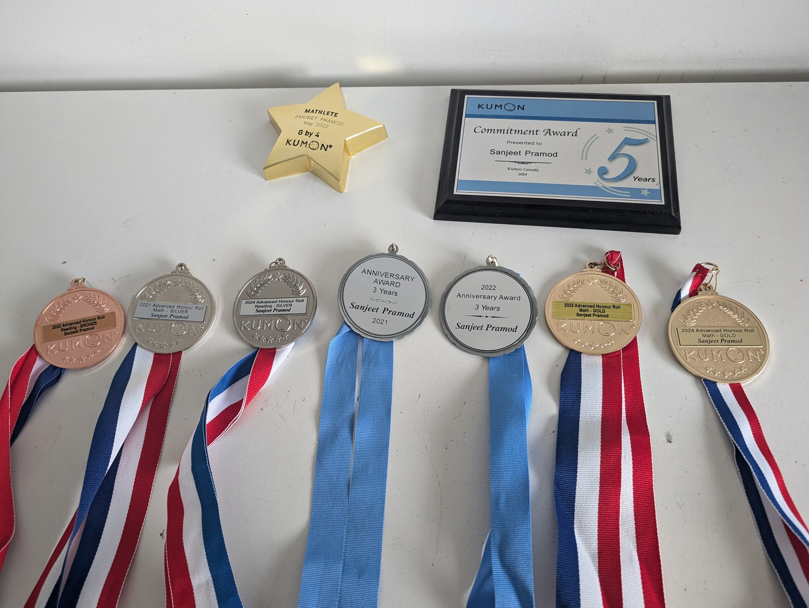
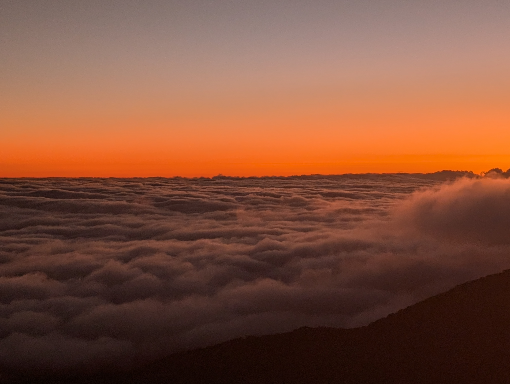
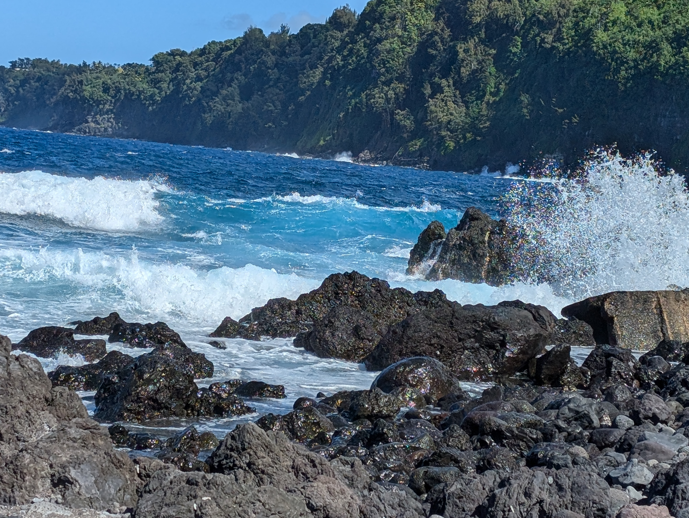

<html lang="en"></html>
<head>
  <meta charset="UTF-8">
  <meta name="viewport" content="width=device-width, initial-scale=1.0">
  <meta http-equiv="X-AU-Compatible" content="ie=edge">
  <meta name="description" content="Welcome to my world">
  <meta name="keywords" content="My hobbies and interests">
  <link rel="stylesheet" href="css/other.css">
  <link rel="stylesheet" media='screen and (max-width: 768px)' href="css/mobile.css">
  <script src="https://kit.fontawesome.com/c3d0924462.js" crossorigin="anonymous"></script>
  <title>Sanjeet Samuel</title>
  
</head>
  <div id="disclaimer">
    <p>We are still working on making this website mobile compatible. It is best viewed on a computer. Thank you for your patience.</p>
  </div>
<body>


    <div id="showcase">
      <div class="continer">
        <div class="showcase-content">
          <h1><span class="text-primary">About</span> Me</h1>
          <p class="lead">Sanjeet Samuel Pramod</p>          </div>
       
      </div>
    </div>

 


  <section id="home-info" class="bg-dark">
    <div class="intrest-info">
         <p>Greetings. I am a seventh-grade student at Our Lady of Mercy, residing in Burnaby with my dad, mom and older sister. I possess a strong passion for Science, Geography, Tennis, and Guitar. My older sister is a nineth grade student and I like playing tennis with her. Through this website, I aim to share my notable achievements and cherished memories from my life.</p>
         <p>One of my interests is the Rubik’s Cube, a puzzle that fascinates me due to its strategic nature. Solving it requires careful planning; you must consider the effects of each turn on the next moves. I find the speed challenge almost addicting and often time myself, with my personal record being under one minute! </p>
         <p> I love playing Tennis and basketball with friends and family. Tennis has helped me build endurance and discipline, I regularly play with my sister and friends in the neighborhood. </p>
         <p>Additionally, music is another passion of mine, and I frequently use the GarageBand app to produce original melodies. From my knowledge of playing the guitar, I create music that reflects my style. I am good at and love playing the Acoustic guitar, which brings me incredible joy. When I’m feeling unhappy or need a break, I turn to my guitar for help. It offers peace and lets me lose myself in music. I enjoy composing my own tunes and writing songs, allowing my emotions to flow through melodies. I have been playing trumpet for the last 2 years in school band</p>
        </div>
  </section>

 <section id="features">
   <div class="box bg-light">
     <h3>My Kumon Awards </h3>
     <p>I have pursued Kumon for over five years, achieving Gold status in both Math and Reading. Kumon has instilled in me a sense of determination; since, even when I lack motivation, I persevere to reach my goals. I look forward to continuing my journey with Kumon.</p>
   </div>
   <div class="box bg-primary">
    <h3>Guitar</h3>
    <p> I have been playing the acoustic guitar for about 5 years now and am good at the instrument. Guitar has taught me discipline and hard work because of the practice that needs to be put in. I passed RCM level 1 with 94% and preparing for Level 3. I look forward to continuing my journey with guitar.</p>
   </div>
   <div class="box bg-light">
    <h3>Astronomy</h3>
    <p>Another one of my interests is astronomy. The reason I delight in it is because it gives me a glimpse of what is past the Earth. I enjoy taking photos of the stars when it is a clear sky, while also trying to name the constellations and stars.    </p>
    <a class="btn" href="astronomy.html">Click to learn more</a>
  </div>
 </section>


 <div class="clr"></div>

 <br></br>

<html></html>
<head>
<style>
body {margin:25px;}

div.polaroid1 {
  width: 50%;
  background-color: white;
  box-shadow: 0 4px 8px 0 rgba(0, 0, 0, 0.2), 0 6px 20px 0 rgba(0, 0, 0, 0.19);
  margin-bottom: 25px;
  float: left;
  padding-top: 20px;

}

div.polaroid2 {
  width: 50%;
  background-color: white;
  box-shadow: 0 4px 8px 0 rgba(0, 0, 0, 0.2), 0 6px 20px 0 rgba(0, 0, 0, 0.19);
  margin-bottom: 25px;
  float: right;
  padding-top: 50px;
}

div.container {
  text-align: center;
  padding: 10px 20px;
}
</style>
</head>
<body>

<div class="polaroid1">
  
  <div class="container">
  <p>My Kumon Awards</p>
  </div>
</div>

<div class="polaroid2">
  
  <div class="container">
  <p>My Level 1 RCM results</p>
  </div>
</div>
<div class="clr"></div>

<br></br>
<div class="picture-title">
  <p><b>I like exploring the outdoors and going on vacations with family. Here are some pictures I have taken:</b></p>

</div>

<div class="polaroid1">
  
  <div class="container">
  <p>Peyto Lake on Icefields Parkway</p>
  </div>
</div>
<div class="polaroid1">
  
  <div class="container">
  <p>3 Sisters Peaks at Canmore AB</p>
  </div>
</div>


<div class="polaroid1">
  
  <div class="container">
  <p>Mauna kea peak, Big Island</p>
  </div>
</div>
<div class="polaroid1">
  
  <div class="container">
  <p>Celestial experience top of Mauna kea</p>
  </div>
</div>
<div class="polaroid1"></div>
  
  <div class="container">
  <p>Sunset on Mauna kea peak, Big Island</p>
  </div>
</div>


<div class="polaroid1"></div>
  
  <div class="container">
  <p>Laupahoehoe Beach, Big Island</p>
  </div>
</div>
<div class="landscape">
  
  <div class="container">
  <p>Panoramic View, Big Island</p>

  </div>
</div>


</body>
</html>


</body>
</html>